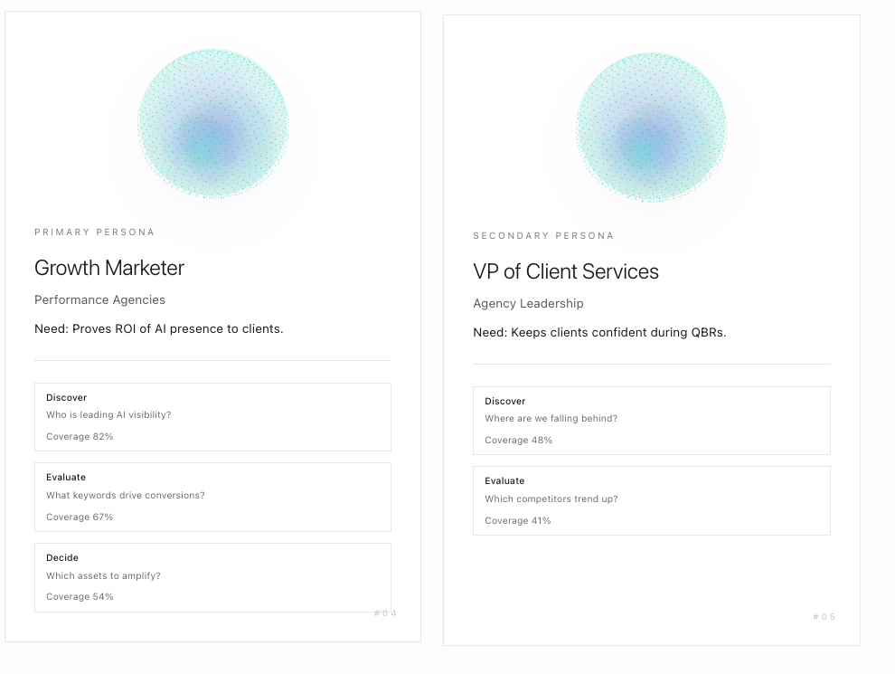
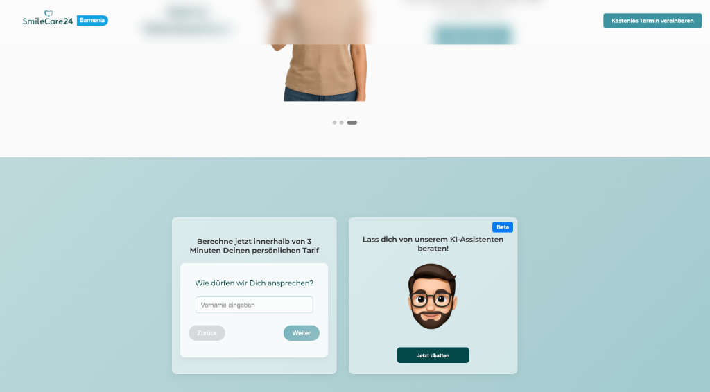

DATA MEETS
STORYTELLING
Talha Uddin
Marketer
Based in Germany
EXPERIENCE
(2020 — Present)
Brand Marketing
The Walt Disney Company

Retail Marketing
Samsung Electronics
Performance Marketing
About You
Account Manager
Cheil Germany
SKILLS
TECHNICAL & CREATIVE STACK
n8n Automation
AI Agents & Workflows
One of the most impactful skill sets I developed is building automated workflows and AI-powered tools using n8n, Python, and LLM-based agents. What started as a personal interest quickly turned into practical systems that solve real marketing problems.
A core project was the creation of an automated research and outreach engine. Using n8n and an LLM-based agent, I built a workflow that could analyze any lead, gather relevant public data, extract key context, and generate a fully personalized outreach message tailored to that individual. Instead of sending generic cold emails, the system produced outreach that felt human, informed, and specific — dramatically increasing the quality of lead interactions.
I first built this system for my own use, but later adapted a version for a friend in the insurance industry, where highly personalized outreach is essential. The workflow automatically researched each insurance lead, identified their needs and background, and drafted a compelling, natural-sounding email that my friend could send with minimal editing. Seeing how much time this saved — and how much more thoughtful and effective the communication became — showed me how powerful AI-assisted marketing operations can be in practice.
This project taught me how to structure complex automation chains, design reliable workflows, and combine creativity with technical precision. More importantly, it sparked my interest in building AI tools that make marketing more efficient, more personal, and more human at scale.
Cursor / LangChain
LLM Applications
Alongside my operational work, I've increasingly focused on building AI-powered tools that give brands deeper insight into how they appear across modern digital ecosystems. One of my key projects was the development of a first-version AEO Audit Tool — a system designed to track brand mentions, visibility, and sentiment across major LLM platforms. As large language models become a primary interface for information retrieval, understanding how a brand is represented inside them is becoming just as important as traditional SEO.
The tool aggregates responses from different LLMs, analyzes tone and sentiment, identifies inconsistencies, and highlights opportunities to improve brand presence in AI-driven environments. This project helped me understand how rapidly the information landscape is shifting — and how brands need new forms of monitoring to stay visible and consistent.
Building on this, I started developing a Customer Simulation Engine: an AI system that predicts how different user segments might react to specific ad concepts, messages, or creative directions. The goal is to allow marketers to test ideas before they go live — using simulated "customer agents" that behave according to psychological, demographic, and contextual cues. While early in development, it has already shown that AI can provide meaningful directional insights long before media spend is involved.
Both tools reflect my interest in designing systems that sit at the intersection of marketing strategy, data, and AI. They've allowed me to think beyond execution and explore how new technologies can give brands a more accurate, dynamic understanding of how they are perceived — and how they can communicate more effectively.

Web Design
UX & Frontend
In addition to my marketing and automation work, I've developed practical skills in web design, UX thinking, and the creation of domain-specific chatbots using Retrieval-Augmented Generation (RAG). These projects grew out of real needs from people around me and showed me how powerful technical tools become when they solve concrete problems.
For a friend working in the insurance industry, I designed and built an entire company website, including structure, content, and front-end implementation. The goal was to create a clean, trustworthy online presence that communicated complex insurance offerings in a simple and customer-friendly way. This project taught me how to translate business goals into design decisions — from layout and hierarchy to tone and visual identity.
Alongside the website, I built a custom RAG-based chatbot that could answer domain-specific insurance questions. The chatbot uses curated documents, internal guidelines, and product information as its knowledge base, allowing it to respond with accurate, context-relevant answers instead of generic AI responses. It serves as both a customer-facing assistant and an internal tool for quick information access.
Working on these projects helped me understand the full stack of digital product creation — from designing the surface to building the intelligence behind it. More importantly, they showed me how web and AI technology can make complex services more accessible, responsive, and user-centered.
EDUCATION
-
B.Sc. Economic Science
Focus on Management & Marketing.
"Bachelor Thesis: Performativity & Identity Construction. How subcultural value is created through consumption."
- M.Sc. Marketing Management Master Thesis: "Consuming to be different – Does consumers' need for uniqueness predict brand loyalty for self-expressive brands?"